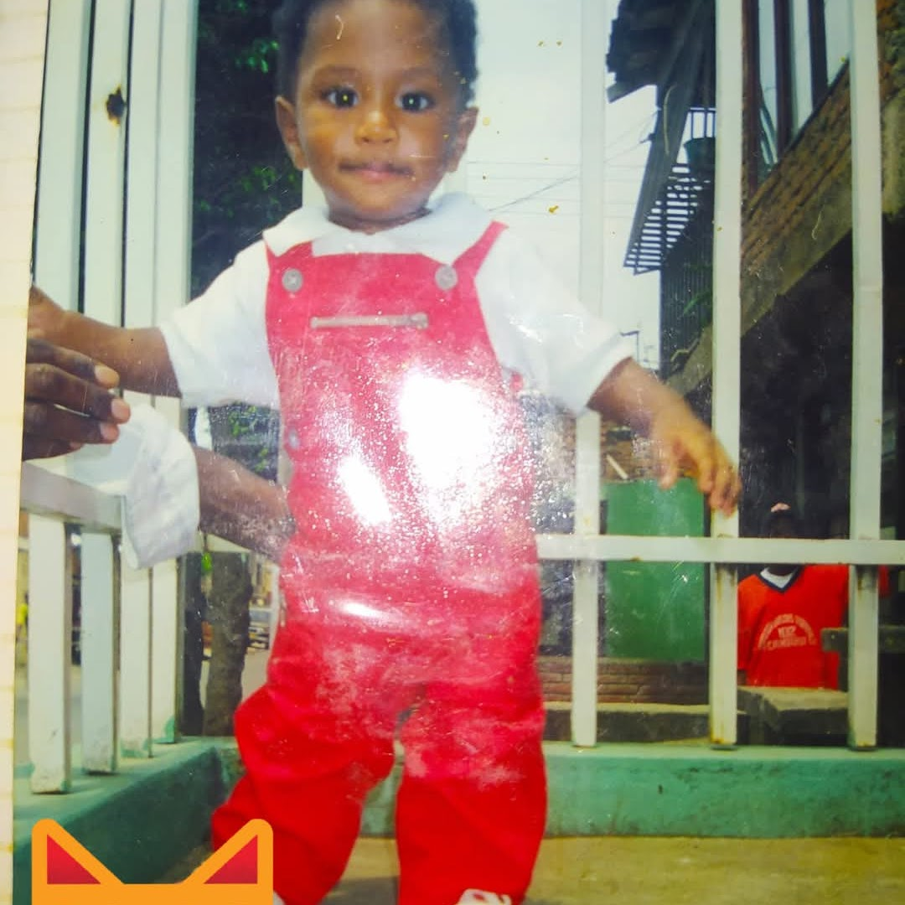
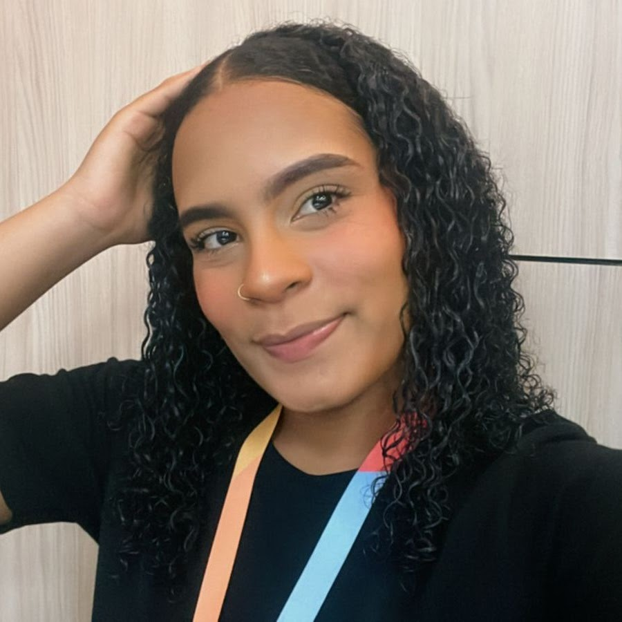

Conoce más sobre nosotros

ROSSY

YEISON

JOSSELYN
¡Hola! Somos Yeison Palacio, Josselyn Angulo y Rosy Yuliana, estudiantes de Comunicación Social, y esta página hace parte de nuestro proyecto transmedia sobre la inteligencia artificial.
Nuestro objetivo es explorar cómo la IA está transformando el mundo, desde la comunicación hasta la vida cotidiana. A través de este proyecto, combinamos distintas plataformas y formatos para crear una experiencia informativa, crítica y creativa. Queremos invitarte a reflexionar con nosotros sobre los desafíos, oportunidades y curiosidades de esta tecnología que está cambiando la forma en que vivimos y nos relacionamos.
¡Bienvenidos a nuestro mundo transmedia!